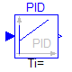
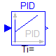
 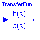
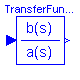


This package contains basic continuous input/output blocks.
Release Notes:
Copyright © 1999-2002, Modelica Association and DLR.
The Modelica package is free software; it can be redistributed and/or modified under the terms of the Modelica license, see the license conditions and the accompanying disclaimer in the documentation of package Modelica in file "Modelica/package.mo".
| Name | Description |
|---|---|
| Integrator | Output the integral of the input signals |
| LimIntegrator | Integrator with limited values of the outputs |
| Derivative | Approximated derivative block |
| FirstOrder | First order transfer function block (= 1 pole) |
| SecondOrder | Second order transfer function block (= 2 poles) |
| PI | Proportional-Integral controller |
| PID | PID-controller in additive description form |
| LimPID | PID controller with limited output, anti-windup compensation and setpoint weighting |
| TransferFunction | Linear transfer function |
| StateSpace | Linear state space system |
| Der | Derivative of input (= analytic differentations) |
Modelica.Blocks.Continuous.Integrator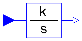
This blocks computes output y=outPort.signal element-wise as integral of the input u=inPort.signal multiplied with the gain k:
k[i]
y[i] = ------ u[i]
s
Release Notes:
| Name | Default | Description |
|---|---|---|
| k[:] | {1} | Integrator gains |
| y0[:] | zeros(size(k, 1)) | Start values of integrators |
block Integrator "Output the integral of the input signals"
parameter Real k[:]={1} "Integrator gains";
parameter Real y0[:]=zeros(size(k, 1)) "Start values of integrators";
extends Interfaces.MIMOs(final n=size(k, 1), y(start=y0));
equation
for i in 1:size(k, 1) loop
der(y[i]) = k[i]*u[i];
end for;
end Integrator;
Modelica.Blocks.Continuous.LimIntegrator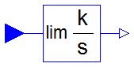
This blocks computes y=outPort.signal element-wise as integral of the input u=inPort.signal multiplied with the gain k. If the integral reaches a given upper or lower limit and the input will drive the integral outside of this bound, the integration is halted and only restarted if the input drives the integral away from the bounds.
Release Notes:
Copyright © 1999-2002, Modelica Association and DLR.
| Name | Default | Description |
|---|---|---|
| k[:] | {1} | Integrator gains |
| outMax[:] | {1} | Upper limits of outputs |
| outMin[:] | -outMax | Lower limits of outputs |
| y0[:] | zeros(size(k, 1)) | Start values of integrators |
block LimIntegrator "Integrator with limited values of the outputs"
parameter Real k[:]={1} "Integrator gains";
parameter Real outMax[:]={1} "Upper limits of outputs";
parameter Real outMin[:]=-outMax "Lower limits of outputs";
parameter Real y0[:]=zeros(size(k, 1)) "Start values of integrators";
extends Interfaces.MIMOs(final n=max([size(k, 1); size(outMax, 1); size(
outMin, 1)]), y(start=y0));
protected
parameter Real p_k[n]=(if size(k, 1) == 1 then ones(n)*k[1] else k);
parameter Real p_outMax[n]=(if size(outMax, 1) == 1 then ones(n)*outMax[1] else
outMax);
parameter Real p_outMin[n]=(if size(outMin, 1) == 1 then ones(n)*outMin[1] else
outMin);
equation
for i in 1:n loop
der(y[i]) = if y[i] < p_outMin[i] and u[i] < 0 or y[i] > p_outMax[i] and
u[i] > 0 then 0 else p_k[i]*u[i];
end for;
end LimIntegrator;
Modelica.Blocks.Continuous.Derivative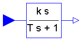
This blocks defines the transfer function between the input u=inPort.signal and the output y=outPort.signal element-wise as approximated derivative:
k[i] * s
y[i] = ------------ * u[i]
T[i] * s + 1
If you would like to be able to change easily between different
transfer functions (FirstOrder, SecondOrder, ... ) by changing
parameters, use the general block TransferFunction instead
and model a derivative block with parameters
b = {k,0}, a = {T, 1}.
Release Notes:
| Name | Default | Description |
|---|---|---|
| k[:] | {1} | Gains |
| T[:] | {0.01} | Time constants (T>0 required; T=0 is ideal derivative block) [s] |
block Derivative "Approximated derivative block"
parameter Real k[:]={1} "Gains";
parameter SI.Time T[ :](min=fill(Modelica.Constants.small, size(T, 1))) = {0.01}
"Time constants (T>0 required; T=0 is ideal derivative block)";
extends Interfaces.MIMOs(final n=max([size(k, 1); size(T, 1)]));
output Real x[n] "State of block";
protected
parameter Real p_k[n]=(if size(k, 1) == 1 then ones(n)*k[1] else k);
parameter Real p_T[n]=(if size(T, 1) == 1 then ones(n)*T[1] else T);
equation
for i in 1:n loop
der(x[i]) = if noEvent(abs(p_k[i]) >= Modelica.Constants.eps) then (u[i] - x[i])/
p_T[i] else 0;
y[i] = if noEvent(abs(p_k[i]) >= Modelica.Constants.eps) then (p_k[i]/p_T[i])*(u[i]
- x[i]) else 0;
end for;
end Derivative;
Modelica.Blocks.Continuous.FirstOrder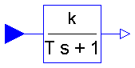
This blocks defines the transfer function between the input u=inPort.signal and the output y=outPort.signal element-wise as first order system:
k[i]
y[i] = ------------ * u[i]
T[i] * s + 1
If you would like to be able to change easily between different
transfer functions (FirstOrder, SecondOrder, ... ) by changing
parameters, use the general block TransferFunction instead
and model a first order SISO system with parameters
b = {k}, a = {T, 1}.
Example:
parameter: k = {0.3}, T = {0.4}
results in:
0.3
y = ----------- * u
0.4 s + 1.0
Release Notes:
| Name | Default | Description |
|---|---|---|
| k[:] | {1} | Gain |
| T[:] | {1} | Time Constant [s] |
block FirstOrder "First order transfer function block (= 1 pole)"
parameter Real k[:]={1} "Gain";
parameter SI.Time T[ :]={1} "Time Constant";
extends Interfaces.MIMOs(final n=max([size(k, 1); size(T, 1)]));
protected
parameter Real p_k[n]=(if size(k, 1) == 1 then ones(n)*k[1] else k);
parameter Real p_T[n]=(if size(T, 1) == 1 then ones(n)*T[1] else T);
equation
for i in 1:n loop
der(y[i]) = (p_k[i]*u[i] - y[i])/p_T[i];
end for;
end FirstOrder;
Modelica.Blocks.Continuous.SecondOrder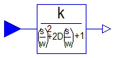
This blocks defines the transfer function between the input u=inPort.signal and the output y=outPort.signal element-wise as second order system:
k[i]
y[i] = ---------------------------------------- * u[i]
( s / w[i] )^2 + 2*D[i]*( s / w[i] ) + 1
If you would like to be able to change easily between different
transfer functions (FirstOrder, SecondOrder, ... ) by changing
parameters, use the general model class TransferFunction
instead and model a second order SISO system with parameters
b = {k}, a = {1/w^2, 2*D/w, 1}.
Example:
parameter: k = {0.3}, w = {0.5}, D = {0.4}
results in:
0.3
y = ------------------- * u
4.0 s^2 + 1.6 s + 1
Release Notes:
| Name | Default | Description |
|---|---|---|
| k[:] | {1} | Gain |
| w[:] | {1} | Angular frequency |
| D[:] | {1} | Damping |
block SecondOrder "Second order transfer function block (= 2 poles)"
parameter Real k[:]={1} "Gain";
parameter Real w[:]={1} "Angular frequency";
parameter Real D[:]={1} "Damping";
extends Interfaces.MIMOs(final n=max([size(k, 1); size(w, 1); size(D, 1)]));
output Real yd[n] "Derivative of y";
protected
parameter Real p_k[n]=(if size(k, 1) == 1 then ones(n)*k[1] else k);
parameter Real p_w[n]=(if size(w, 1) == 1 then ones(n)*w[1] else w);
parameter Real p_D[n]=(if size(D, 1) == 1 then ones(n)*D[1] else D);
equation
for i in 1:n loop
der(y[i]) = yd[i];
der(yd[i]) = p_w[i]*(p_w[i]*(p_k[i]*u[i] - y[i]) - 2*p_D[i]*yd[i]);
end for;
end SecondOrder;
Modelica.Blocks.Continuous.PI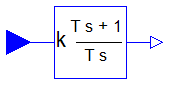
This blocks defines the transfer function between the input u=inPort.signal and the output y=outPort.signal element-wise as PI system:
1
y[i] = k[i] * (1 + ------ ) * u[i]
T[i]*s
T[i]*s + 1
= k[i] * ----------- * u[i]
T[i]*s
If you would like to be able to change easily between different
transfer functions (FirstOrder, SecondOrder, ... ) by changing
parameters, use the general model class TransferFunction
instead and model a PI SISO system with parameters
b = {k*T, k}, a = {T, 0}.
Example:
parameter: k = {0.3}, T = {0.4}
results in:
0.4 s + 1
y = 0.3 ----------- * u
0.4 s
Release Notes:
| Name | Default | Description |
|---|---|---|
| k[:] | {1} | Gain |
| T[:] | {1} | Time Constant (T>0 required) [s] |
block PI "Proportional-Integral controller"
parameter Real k[:]={1} "Gain";
parameter SI.Time T[ :]={1} "Time Constant (T>0 required)";
extends Interfaces.MIMOs(final n=max([size(k, 1); size(T, 1)]));
output Real x[n] "State of block";
protected
parameter Real p_k[n]=(if size(k, 1) == 1 then ones(n)*k[1] else k);
parameter Real p_T[n]=(if size(T, 1) == 1 then ones(n)*T[1] else T);
equation
for i in 1:n loop
der(x[i]) = u[i]/p_T[i];
y[i] = p_k[i]*(x[i] + u[i]);
end for;
end PI;
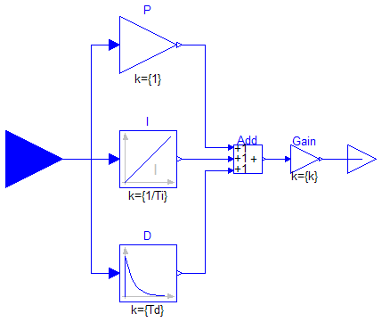
This is the text-book version of a PID-controller. For a more practically useful PID-controller, use block LimPID.
Release Notes:
| Name | Default | Description |
|---|---|---|
| k | 1 | Gain |
| Ti | 0.5 | Time Constant of Integrator [s] |
| Td | 0.1 | Time Constant of Derivative block [s] |
| Nd | 10 | The higher Nd, the more ideal the derivative block |
block PID "PID-controller in additive description form"
extends Interfaces.SISO;
parameter Real k=1 "Gain";
parameter SI.Time Ti( min=Modelica.Constants.small) = 0.5
"Time Constant of Integrator";
parameter SI.Time Td( min=0) = 0.1 "Time Constant of Derivative block";
parameter Real Nd(min=Modelica.Constants.small) = 10
"The higher Nd, the more ideal the derivative block";
Math.Gain P "Proportional part of PID controller";
Integrator I(
k={1/Ti}) "Integral part of PID controller";
Derivative D(
k={Td}, T={max([Td/Nd, 100*Modelica.Constants.eps])})
"Derivative part of PID controller";
Math.Gain Gain(
k={k}) "Gain of PID controller";
Math.Add3 Add;
equation
connect(P.outPort, Add.inPort1);
connect(I.outPort, Add.inPort2);
connect(D.outPort, Add.inPort3);
connect(Add.outPort, Gain.inPort);
connect(outPort, Gain.outPort);
connect(inPort, I.inPort);
connect(inPort, P.inPort);
connect(inPort, D.inPort);
end PID;
Modelica.Blocks.Continuous.LimPID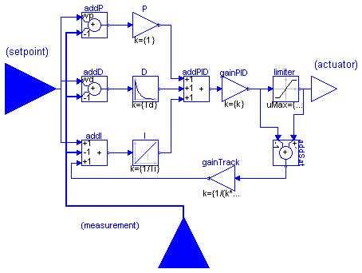
This is a PID controller incorporating several practical aspects. It is designed according to chapter 3 of the book
K. Astroem, T. Haegglund: PID Controllers: Theory, Design, and Tuning.
2nd edition, 1995.
Besides the additive proportional, integral and derivative part of this controller, the following practical aspects are included:
Release Notes:
| Name | Default | Description |
|---|---|---|
| k | 1 | Gain of PID block |
| Ti | 0.5 | Time constant of Integrator block [s] |
| Td | 0.1 | Time constant of Derivative block [s] |
| yMax | 1 | Upper limit of output |
| yMin | -yMax | Lower limit of output |
| wp | 1 | Set-point weight for Proportional block (0..1) |
| wd | 0 | Set-point weight for Derivative block (0..1) |
| Ni | 0.9 | Ni*Ti is time constant of anti-windup compensation |
| Nd | 10 | The higher Nd, the more ideal the derivative block |
block LimPID
"PID controller with limited output, anti-windup compensation and setpoint weighting"
extends Interfaces.SVcontrol;
parameter Real k(min=0) = 1 "Gain of PID block";
parameter SI.Time Ti( min=Modelica.Constants.small) = 0.5
"Time constant of Integrator block";
parameter SI.Time Td( min=0) = 0.1 "Time constant of Derivative block";
parameter Real yMax=1 "Upper limit of output";
parameter Real yMin=-yMax "Lower limit of output";
parameter Real wp(min=0) = 1 "Set-point weight for Proportional block (0..1)";
parameter Real wd(min=0) = 0 "Set-point weight for Derivative block (0..1)";
parameter Real Ni(min=100*Modelica.Constants.eps) = 0.9
"Ni*Ti is time constant of anti-windup compensation";
parameter Real Nd(min=100*Modelica.Constants.eps) = 10
"The higher Nd, the more ideal the derivative block";
Nonlinear.Limiter limiter(
uMax={yMax}, uMin={yMin});
Math.Add addP(
k1=wp, k2=-1);
Math.Add addD(
k1=wd, k2=-1);
Math.Gain P;
Integrator I(
k={1/Ti});
Derivative D(
k={Td}, T={max([Td/Nd, 1.e-14])});
Math.Gain gainPID(
k={k});
Math.Add3 addPID;
Math.Add3 addI(
k2=-1);
Math.Add addSat(
k2=-1);
Math.Gain gainTrack(
k={1/(k*Ni)});
equation
assert(yMax >= yMin, "PID: Limits must be consistent");
connect(inPort_s, addP.inPort1);
connect(inPort_m, addP.inPort2);
connect(inPort_s, addD.inPort1);
connect(inPort_m, addD.inPort2);
connect(inPort_s, addI.inPort1);
connect(inPort_m, addI.inPort2);
connect(gainTrack.outPort, addI.inPort3);
connect(addP.outPort, P.inPort);
connect(addD.outPort, D.inPort);
connect(addI.outPort, I.inPort);
connect(P.outPort, addPID.inPort1);
connect(D.outPort, addPID.inPort2);
connect(I.outPort, addPID.inPort3);
connect(addPID.outPort, gainPID.inPort);
connect(gainPID.outPort, addSat.inPort2);
connect(addSat.outPort, gainTrack.inPort);
connect(gainPID.outPort, limiter.inPort);
connect(limiter.outPort, outPort);
connect(limiter.outPort, addSat.inPort1);
end LimPID;
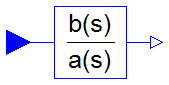
This block defines the transfer function between the input u=inPort.signal[1] and the output y=outPort.signal[1] as (nb = dimension of b, na = dimension of a):
b[1]*s^[nb-1] + b[2]*s^[nb-2] + ... + b[nb]
y(s) = --------------------------------------------- * u(s)
a[1]*s^[na-1] + a[2]*s^[na-2] + ... + a[na]
State variables x are defined according to controller canonical form. Initial values of the states can be set as start values of x.
Example:
TransferFunction g(b = {2,4}, a = {1,3});
results in the following transfer function:
2*s + 4
y = --------- * u
s + 3
Release Notes:
| Name | Default | Description |
|---|---|---|
| b[:] | {1} | Numerator coefficients of transfer function. |
| a[:] | {1,1} | Denominator coefficients of transfer function. |
block TransferFunction "Linear transfer function"
extends Interfaces.SISO;
parameter Real b[:]={1} "Numerator coefficients of transfer function.";
parameter Real a[:]={1,1} "Denominator coefficients of transfer function.";
output Real x[size(a, 1) - 1]
"State of transfer function from controller canonical form";
protected
parameter Integer na=size(a, 1) "Size of Denominator of transfer function.";
parameter Integer nb(max=na) = size(b, 1)
"Size of Numerator of transfer function.";
parameter Integer nx=size(a, 1) - 1;
Real x1dot "Derivative of first state of TransferFcn";
Real xn "Highest order state of TransferFcn";
equation
[der(x); xn] = [x1dot; x];
[u] = transpose([a])*[x1dot; x];
[y] = transpose([zeros(na - nb, 1); b])*[x1dot; x];
end TransferFunction;
Modelica.Blocks.Continuous.StateSpace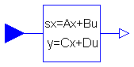
The State Space block defines the relation between the input u=inPort.signal and the output y=outPort.signal in state space form:
der(x) = A * x + B * u
y = C * x + D * u
The input is a vector of length nu, the output is a vector of length ny and nx is the number of states. Accordingly
A has the dimension: A(nx,nx),
B has the dimension: B(nx,nu),
C has the dimension: C(ny,nx),
D has the dimension: D(ny,nu)
Example:
parameter: A = [0.12, 2;3, 1.5]
parameter: B = [2, 7;3, 1]
parameter: C = [0.1, 2]
parameter: D = zeros(ny,nu)
results in the following equations:
[der(x[1])] [0.12 2.00] [x[1]] [2.0 7.0] [u[1]]
[ ] = [ ]*[ ] + [ ]*[ ]
[der(x[2])] [3.00 1.50] [x[2]] [0.1 2.0] [u[2]]
[x[1]] [u[1]]
y[1] = [0.1 2.0] * [ ] + [0 0] * [ ]
[x[2]] [u[2]]
| Name | Default | Description |
|---|---|---|
| A[:, size(A, 1)] | [1, 0; 0, 1] | Matrix A of state space model |
| B[size(A, 1), :] | [1; 1] | Matrix B of state space model |
| C[:, size(A, 1)] | [1, 1] | Matrix C of state space model |
| D[size(C, 1), size(B, 2)] | zeros(size(C, 1), size(B, 2)) | Matrix D of state space model |
block StateSpace "Linear state space system"
parameter Real A[:, size(A, 1)]=[1, 0; 0, 1] "Matrix A of state space model";
parameter Real B[size(A, 1), :]=[1; 1] "Matrix B of state space model";
parameter Real C[:, size(A, 1)]=[1, 1] "Matrix C of state space model";
parameter Real D[size(C, 1), size(B, 2)]=zeros(size(C, 1), size(B, 2))
"Matrix D of state space model";
extends Interfaces.MIMO(final nin=size(B, 2), final nout=size(C, 1));
output Real x[size(A, 1)] "State vector";
equation
der(x) = A*x + B*u;
y = C*x + D*u;
end StateSpace;
Modelica.Blocks.Continuous.Der

Defines that the output (= outPort.signal) is the derivative of the input (=inPort.signal). Note, that Modelica.Blocks.Continuous.Derivative computes the derivative in an approximate sense, where this block computes the derivative exactly. This requires that the input signals are differentiated by the Modelica translator, if these derivatives are not yet present in the model.
| Name | Default | Description |
|---|---|---|
| n | 1 | Number of inputs (= number of outputs) |
block Der "Derivative of input (= analytic differentations)"
extends Interfaces.MIMOs;
equation
for i in 1:n loop
y[i] = der(u[i]);
end for;
end Der;